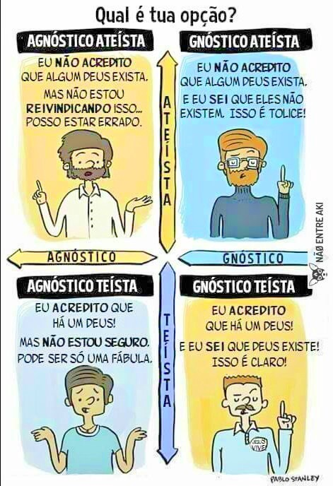

Breve definição de “ateu agnóstico”
Penso que nunca deveriamos categorizar as pessoas ou rotular a si mesmo, nem para partencer a grupos nem para se sentir superior a alguém, mas as pessoas gostam disso pois é um atributo mental, classificar tudo, então vou definir algumas coisas aqui
Primeira coisa é separar crença de conhecimento, vai e volta as crentes e ateus discutem sobre o tema "Deus", de um lado pedem evidências pois do outro lado alga-se saber, porém nessas horas alegam que é necessario acreditar.Então temos que separar o que é gnosis=conhecer ou conhecimento, e teísmo=acreditar em Deus; já "A+gnosis" ou agnóstico= não conhecer, ou não saber, e "A+teísmo"= não acreditar em Deus, pois Deus é Theos/teos, e nisso cabe quatro dimensões como na figura abaixo: 
Assim sendo pode existir:
"eu divido as convicções em pelo menos quatro dimensões, a dimensão do que você acredita e pensa saber que existe, acredita e reconhece não saber se existe e a dimensão do que você não acredita e reconhece não saber se existe, e a dimensão que você não acredita e alega saber que não existe."
Acreditar X Conhecer
Em relação aquilo que você acredita, cada um, individualmente pela sua fé, pode acreditar em coisas diferentes. Há quem acredite em deuses, em extraterrestres, em Papai Noel, e em outras coisas mais.
Em relação aquilo que você conhece, está relacionado com o contato que cada pessoa tem sobre o conhecimento, os fatos e evidências que se tem sobre aquilo. E as duas coisas são coexistentes.
Eu posso acreditar em algo e saber que ele não faz sentido; ou não acreditar em algo, mesmo sabendo que existem certos conhecimentos de que aquilo é do jeito que é.
Por exemplo, eu não acredito no coelho da Páscoa e “sei” que ele não existe. Então eu sou gnóstico (tenho evidências do meu conhecimento) e “ateu” (não acredito) ao coelhinho da Páscoa, nesse caso seria Akounéli não crença no coelho.
Ao mesmo tempo que alguém pode acreditar em Deus (teísta) e não ter certeza, em termos de conhecimento, se ele existe (agnóstico).
Quando eu digo que eu sou ateu agnóstico, significa que eu não acredito (não tenho fé) na existência de um ou mais deuses, ao mesmo tempo que as evidências e conhecimentos que temos a cerca de alguns desses deuses não me permite dizer, com certeza, se ele de fato existe ou até de dizer que ele de fato não existe.
O que não significa que eu esteja em cima do muro, eu tenho convicção que todos os Deuses inclusive das religões atuais não existem — e provavelmente posso levar isso até o final da minha vida, mas tenho que ser honesto comigo mesmo, de saber que as evidências que eu tenho (até hoje) não são suficientes para dizer que não haja um Deus ainda não revelado. Se surgir novas evidências, posso reavaliar o meu conhecimento sobre a existência em qualquer um dos Deuses, mas o que eu tenho hoje é a crença de que ele não existe.
“Eu não acredito em nenhum Deus que me foi apresentado até hoje, mas pode ser que exista algum tipo de Deus” / “Eu não sei se existe Deus. Tenho dúvidas”
Essa é a posição de um agnóstico ateu e que está disposto a rever o seu posicionamento caso surja alguma evidência ou fato que afete sua fé e o seu conhecimento em relação a este Deus.
No fundo, é a boa prática de um agnóstico que utiliza a ciência como uma das formas de interpretar o mundo. A partir do momento que surgir um novo conhecimento sobre a existência ou não de um Deus, o agnóstico se dispõe a se tornar gnóstico (teísta pleno ou ateísta pleno).
“Creio que a ciência nunca poderá concluir sobre a existência de Deus”, porque essa não é a função da ciência, por outro lado ela explica muitas coisas que em outro tempo a unica explicação era Deus.
Aqui é um agnóstico pessimista, que parte, inclusive, das ideias do diálogo de Teeteto, de Platão. Na conversa, o matemático Teeteto fornece três definições: o conhecimento como percepção, o conhecimento como opinião verdadeira e o conhecimento como opinião verdadeira acompanhada de explicação. Todas as definições são refutadas por Sócrates.
Para este agnóstico, a ciência é o único modo cético de tentar entender o conhecimento e se posicionar sobre determinada crença. Entretanto, a natureza pessimista o inclina a acreditar que a ciência não conseguirá (e talvez não deva) provar a existência (ou não) de Deus. não de um Deus, o agnóstico se dispõe a se tornar gnóstico (teísta ou ateísta).
Aqui vem a famosa ideia do “Deus Arte Moderna” — aquele Deus “diferentão”, que não se apega a nada, nem mesmo a uma religião, livre de dogmas, liturgia e preceitos. Aqui as pessoas acreditam em Deus apenas para fins de acalentamento e salvação, sem assumir qualquer ônus ou responsabilidade sobre essa crença.
Aqui estamos falando de teístas, que podem ser gnósticos ou agnósticos (já que aqui não fala sobre conhecer, apenas sobre crer).
Para eles a religião é o grande problema, e Deus é uma ideia interessante, alguns desses se autodenominam "Deístas", e até não aceitam instituições religiosas, mas acreditam em um "Designer do universo".
E quanto maior a identificação da pessoa com este Deus (em relação a desejos, forma de agir e até com características físicas) maior o engajamento desse teísta com a divindade.
O Deus passa a ser a sua imagem e semelhança, e tanto faz se a pessoa tem conhecimento sobre a existência ou não desse Deus.
Eu não tô nem aí
Esse caso não necessariamente representa um agnóstico, mas um ignóstico, um agnóstico que, de fato, está sempre em busca do conhecimento dificilmente pensaria assim, porque ele entende o conceito humano de Deus (ele existindo ou não), segundo Richard Dawkins em seu livro Deus um delirio classifica esse grupo como Apateístas.
Na antiguidade
Mas entender os fenômenos da natureza foi um grande desafio. Além disso, para viver em grandes grupos foi necessário evoluir a forma de comunicação e as relações sociais. E para estes bons relacionamentos, é necessário a habilidade de identificar emoções.
Esse conhecimento adquirido era transmitido por estórias. E toda nova informação era associada ao conhecimento pré-adquirido. Um jeito de entender a natureza seria humanizá-la, a significação que é dado a natureza tornando-a humana e com emoções. Surgiam aí os primeiros deuses. Deuses serviram para tirar o ser humano da escuridão.
Enquanto o mundo provocava medo nas pessoas, os deuses traziam esclarecimento e entendimento destes fenômenos (ainda que não verdadeiros) através de estórias que promoviam a coesão social e a valorização dos costumes. Os deuses passaram a ser a própria consolidação da cultura e dos anseios daquele povo. A religião conectou as pessoas.
Mas aí veio o iluminismo e revolução francesa, e uma miríade de ideias modernos, que colocou um ponto de que não é necessário uma religião para conectar e unificar um povo.
A religião passou a compartilhar espaço com outras correntes, como a ideologia (capitalismo, socialismo, etc). O mundo deixou de ser preto e branco, e a diversidade de opiniões passou a ser a regra do dia.
O Deus (ou qualquer outra coisa) passa a ser a representação de tudo o que é importante para uma pessoa. Não necessariamente aquele Deus, daquela forma, será importante para outras pessoas. O respeito a diversidade de opiniões é a grande frente de luta que possibilita a conexão atual de pessoas — qualquer outra coisa é apenas segregação.
Por isso, um agnóstico ateísta compreende o conceito e a necessidade de Deus nos dias atuais, e não adota necessariamente uma postura beligerante ou ignorante em relação ao assunto. Mas sim o de tentar entender, iluminar e esclarecer para as pessoas aquilo que eles estão sentindo.